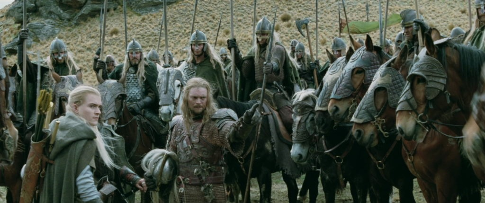
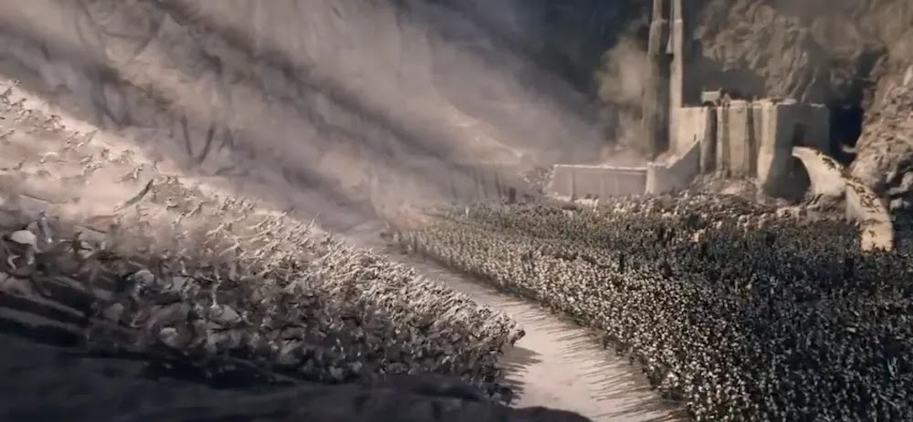
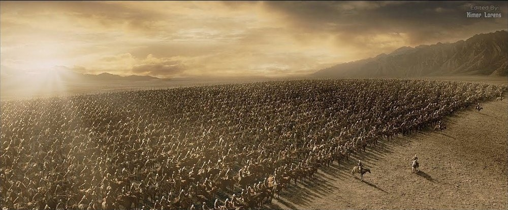
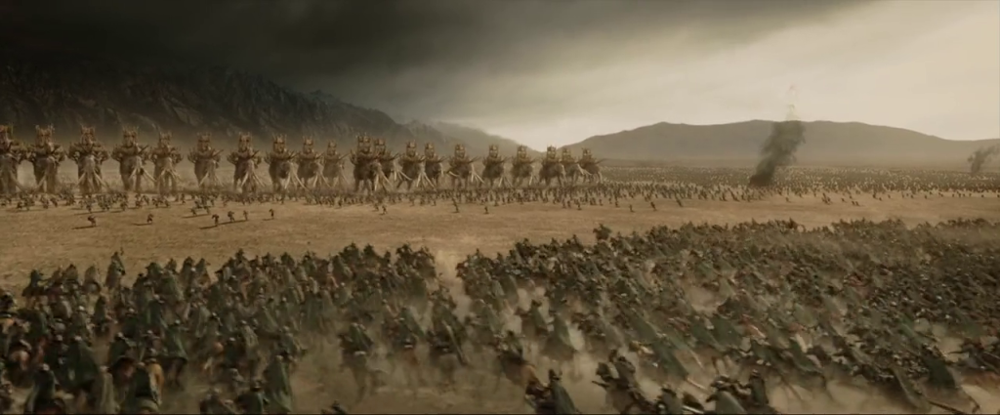

History of Rohan
Founded/Built : TA 2510 - ?

Helm's Deep
While the battles at the Fords of Isen was being fought, Gandalf journeyed towards Edoras with Aragorn, Legolas, and Gimli. Upon his arrival, the members of the Fellowship managed to enter Théoden's hall and there confront Grimá. Gandalf, in a display of his new power after returning from death in Moria, broke Saruman's hold on the king's mind, and spoke to Théoden concerning the true happenings of the past weeks, when Saruman advanced upon his lands unbeknownst to the king. Théoden freed Éomer at Gandalf's urging, and banished Grimá, who was revealed at last to the king as an agent of Saruman. Summoning all men able to bear arms, Théoden hastily set out for the Hornburg, where he thought to make a stand against Saruman's army. Gandalf, meanwhile, left both his companions of the Fellowship and Théoden and rode urgently to meet up with Treebeard, who led the Ents against Isengard and coordinated the attack of the Huorns upon Saruman's forces at Helm's Deep.

The Rohirrim under Théoden arrived at the Hornburg just before the main force of Saruman's army, and through the night, a battle raged for possession of the Hornburg, the fortress that no opposing army had ever taken. Strengthened by what men had retreated from the Fords of Isen and led by Aragorn and Éomer, the Rohirrim managed to repel the hosts of Isengard for most of the night, but as dawn approached, Saruman's secret weapon, a blasting fire, was revealed, and a great breach was torn in the Deeping Wall and main gate. Desiring to make a final stand, Théoden rode down out of the Hornburg with the knights of his household, with Aragorn beside him, and they hewed a path through Saruman's forces to the walls of the fortress. There, they beheld an amazing sight; a forest that had literally appeared overnight - the Huorns. Adding to the dismay of Saruman's army at the sudden onset of the king and his men, as well as the Huorns, Gandalf reappeared, having found Erkenbrand, Lord of Westfold, and a thousand more warriors who had survived the battles at the Fords of Isen. With all three allies descending upon the Orcs and Dunlendings, Saruman's forces surrendered or were killed, and Rohan gained a hard-fought victory.

Rohan in the battle for Minas Tirith
On the road to Minas Tirith, Théoden's army received help from Ghân-buri-Ghân, chieftain of the Drúedain, and came to Rammas Echor at dawn of March 15 of the year 3019. That day he led the Rohirrim onto the Pelennor Fields, and the host of Rohan at first overwhelmed the Orc-legions of Sauron. Théoden then led his knights against the cavalry of the Haradrim as well, personally slaying their chieftain, and hewing his banner. Yet in that moment of great victory for the king, the Lord of the Nazgûl descended upon Théoden and mortally wounded him. Éowyn, sister of Éomer, had ridden to war with the Rohirrim, unknown to any of the men of the Mark, and revealed herself in single combat with the Witch-king.

With the aid of Merry, Éowyn slew the Witch-king, and thus won great renown among all the peoples of the west for her bravery. Théoden, as he lay dying, called Éomer, now his heir, King of the Mark, and bade him tell Éowyn farewell, not knowing that his niece had defended him from the Witch-king. His knights bore Théoden's body out of the battle, while Éomer led the Rohirrim in their continued assault upon the Haradrim. The forces of Mordor greatly outnumbered the armies of Gondor and Rohan, however, and defeat appeared nigh, when Aragorn, returning from the Paths of the Dead, came up from the coast in the captured ships of the Corsairs of Umbar. Leading a great many men gathered from the southern fiefs of Gondor his arrival helped to turn the tide of battle.